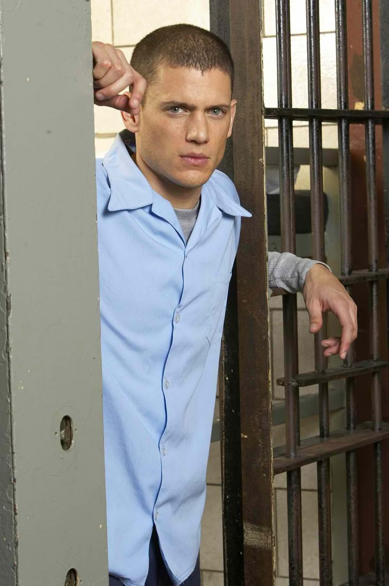
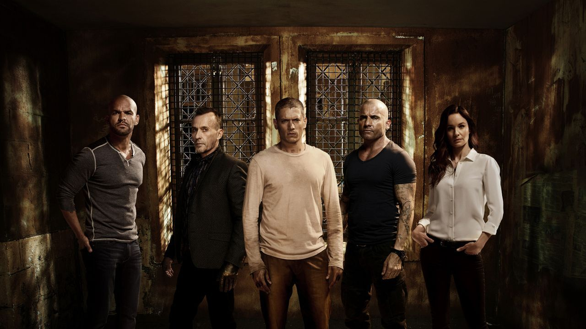
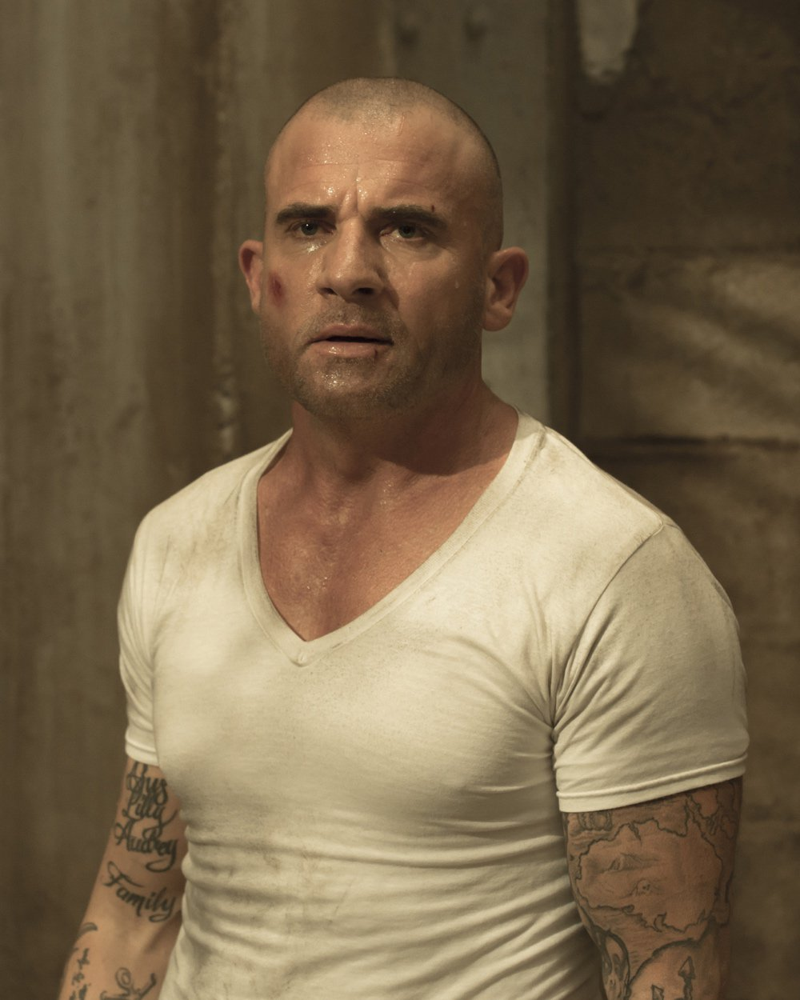
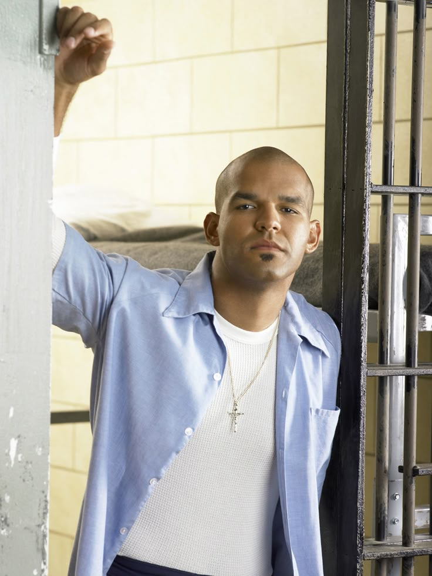
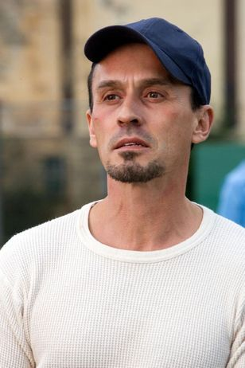
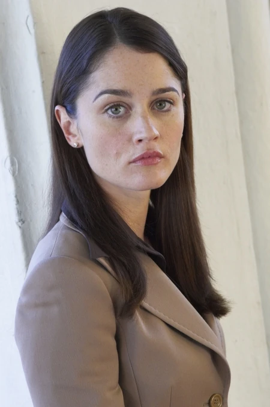
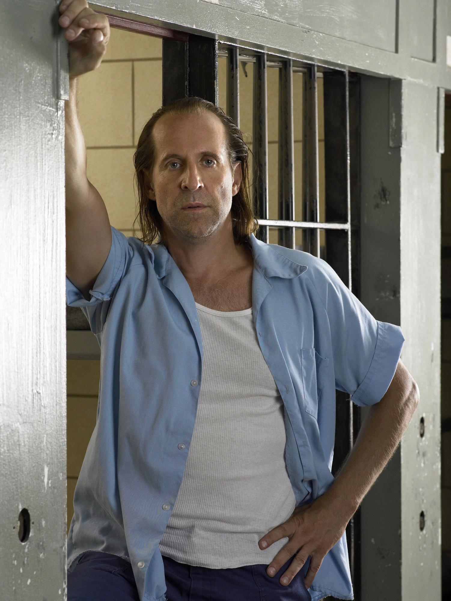
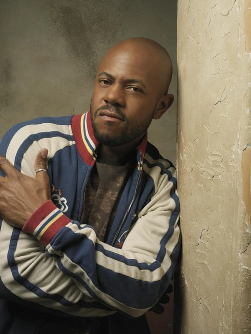
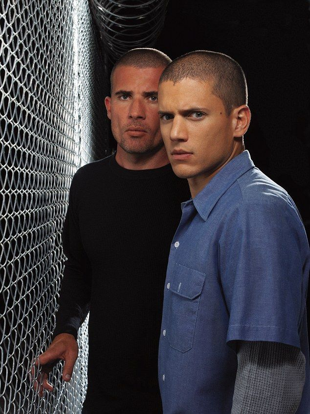

FR—04-2005

Michael Scofield
Ingeniero estructural de mente fría y precisión quirúrgica. Diseñó su propia condena para poder diseñar, después, la fuga.
Arquitecto del plan
Prison Break es una aclamada serie de drama y suspense creada por Paul Scheuring. La historia sigue a Michael Scofield, un brillante ingeniero estructural que se hace encarcelar deliberadamente en la prisión de Fox River para salvar a su hermano Lincoln Burrows, quien ha sido condenado a muerte por un crimen que no cometió.
Con un plan meticulosamente diseñado y tatuado en su propio cuerpo, Michael inicia una peligrosa fuga junto a un grupo de reclusos. A lo largo de las temporadas, la trama se expande más allá de los muros de la prisión, involucrando conspiraciones gubernamentales, traiciones, alianzas inesperadas y una lucha constante por la libertad y la verdad.
La serie combina acción, misterio y drama emocional, convirtiéndose en un fenómeno cultural gracias a sus giros argumentales, su ritmo trepidante y un elenco protagonizado por Wentworth Miller y Dominic Purcell.
VER SERIE→Ocho nombres, ocho expedientes. Cada uno con algo que perder y una razón para arriesgarlo todo dentro de los muros de Fox River.

Ingeniero estructural de mente fría y precisión quirúrgica. Diseñó su propia condena para poder diseñar, después, la fuga.
Arquitecto del plan
Condenado a la silla eléctrica por un asesinato que jura no haber cometido. Su inocencia es el motor silencioso de todo el plan.
Corredor de la muerteMédica de la prisión, atrapada entre el juramento profesional y una conciencia que no puede mirar hacia otro lado.
Médica de Fox River
Compañero de celda de Michael, leal hasta el final. Cuenta los días que lo separan de la mujer que ama.
Compañero de celda
Carisma venenoso y ninguna regla que respetar. El elemento más impredecible de todo el bloque.
Convicto peligroso
Abogada y antiguo amor de Lincoln. Desde afuera, tira del hilo que podría desmontar toda la conspiración.
Abogada
Jefe mafioso con contactos que llegan más allá de los muros. Un aliado imprescindible y, a la vez, una amenaza constante.
Capo mafioso
Descubre el secreto de Michael y se suma al grupo de fuga, decidido a volver con su familia cueste lo que cueste.
Compañero de fugaCinco actos, un objetivo. Elegí una temporada para ver su plano y su conflicto central.

Michael Scofield atraca un banco a plena luz del día con el único propósito de ser condenado y enviado a Fox River, la misma penitenciaría donde su hermano Lincoln espera su ejecución. Bajo la ropa lleva tatuada, línea por línea, la arquitectura completa del edificio: conductos de ventilación, cañerías, puntos ciegos de las cámaras y los horarios exactos de cada turno de guardia. Adentro deberá ganarse la confianza de compañeros de celda impredecibles, sortear a un alcaide que no se deja engañar fácilmente y encontrar la forma de avanzar la obra sin levantar sospechas, todo mientras el reloj de la ejecución de Lincoln sigue corriendo.
Conflicto central: construir la fuga antes de que se agote el tiempo de Lincoln.

Ocho hombres cruzan el muro de Fox River la misma noche, y ocho caminos distintos se abren de golpe por todo el país. Sin el orden ni la disciplina de la prisión que los mantenía unidos, cada uno debe decidir en quién confiar y hasta dónde llegar para no ser atrapado. La agente Alexander Mahone, con una motivación propia que oculta con cuidado, lidera la cacería federal pisándoles los talones, mientras Michael intenta sostener un plan que nunca contempló lo impredecibles que serían sus propios aliados una vez libres. La libertad, resulta, tiene sus propias rejas.
Conflicto central: sobrevivir en libertad sin que la cacería federal los alcance.

Michael se entrega a las autoridades panameñas a cambio de la liberación de Lincoln, y termina encerrado en Sona: una prisión donde el estado abandonó hace tiempo cualquier intento de control y donde los propios reclusos imponen su propia ley violenta. Sin planos tatuados esta vez, sin ventaja calculada de antemano, tendrá que levantar un nuevo plan de fuga improvisando sobre la marcha, negociando con facciones internas y midiendo cada paso para sobrevivir un solo día más dentro de un lugar donde la autoridad no es de nadie y es de todos a la vez.
Conflicto central: encontrar una salida en una prisión donde nadie manda del todo.

Libres, pero nunca a salvo: la Compañía, una organización clandestina con alcance en cada nivel del poder, obliga al grupo a ejecutar un último trabajo imposible a cambio de limpiar sus antecedentes. Ya no hay muros de concreto que definan la prisión: ahora es una red invisible de vigilancia, chantaje y traición la que los mantiene atrapados. Michael y Lincoln deben infiltrarse en la sede misma de sus captores, sabiendo que cada aliado de las temporadas anteriores puede haberse convertido, sin previo aviso, en un enemigo más peligroso que cualquier guardia de Fox River.
Conflicto central: cumplir un último trabajo imposible antes de que la Compañía cobre su parte.

Años después de que el mundo entero lo diera por muerto, Michael Scofield reaparece envuelto en un misterio tan calculado como todos sus planes anteriores. Su regreso arrastra de nuevo a Lincoln, a Sara y al resto del grupo a un entramado internacional que empieza en una prisión en Yemen y se extiende hasta viejas cuentas pendientes en territorio propio. El tiempo cambió a cada uno de ellos, pero la pregunta de fondo sigue intacta: ¿existe alguna vez una salida definitiva para quienes ya demostraron que ningún muro puede contenerlos del todo?
Conflicto central: descubrir qué precio tiene, esta vez, volver de entre los muertos.
Instantáneas del elenco y de los escenarios que dieron vida a Fox River. Hacé clic en cualquiera para verla en grande.

:max_bytes(150000):strip_icc()/prison-break-4-4-17-2000-324e9ecc79b2400e92787a7d0e6154b9.jpg)


¿Preguntas, sugerencias o simplemente ganas de hablar de la serie? Dejanos tu mensaje.
